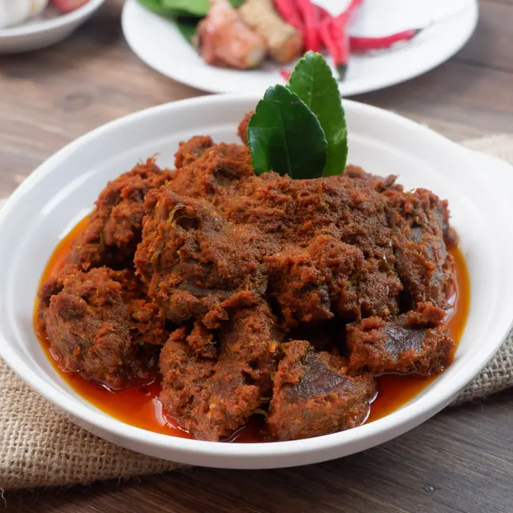

Hidangan ini pasti ada dimana-mana apabila kita berbicara tentang masakan yang berasal dari Sumatera Barat.
Masakan ini terkenal dengan cita rasa pedas dan porsi yang ditawarkan selalu dalam jumlah yang besar.
Tenang aja, kami juga ga kalah banyak ngasih porsi buat kamu!

Rendang
menggunakan daging dan santan kelapa sebagai bahan utama dengan kandungan bumbu rempah-rempah yang kaya.
Tak heran, Rendang diyakini sebagai makanan terlezat di dunia. Rasanya seluruh rakyat Indonesia pasti setuju, sih.
Pempek
Keunggulan hidangan ini adalah terbuat dari daging ikan yang digiling lembut
yang dicampur tepung kanji atau tepung sagu.
Pempek biasanya disajikan dengan kuah cuka yang memiliki rasa asam, manis, dan pedas.
Makanan paling berat yang kita punya, soalnya ada kapal selam.
Jawa
Lontong Balap
Keunikan hidangan ini terletak pada petis kemudian dicampur
dengan lontong dan toge dan disiram kuah. Biasanya dinikmati dengan sate kerang. Jadi
pengen balapan buat order makanan ini.
Gudeg
Yang menjadi keunggulan masyarakat Jogja, Gudeg, terkenal akan rasa legit diimbangi
dengan manis
Manisnya itu lho, bikin gak tahan!
Sate Kambing
Siapa sih yang nggak tahu makanan satu ini,
daging kambing yang empuk ditusuk oleh tusuk lidi kemudian dibakar dengan arang menyala.
Mas, satenya 100 tusuk ya.
Bali
Ayam Betutu
Hidangan ayam betutu ini memiliki cita rasa yang pedas karena dilumuri oleh
cabai di seluruh bagian ayam.
buat kamu yang pengen pedes, siap-siap aja bakal dimanjain sama tiap gigitan ayamnya!
Bebek Timbungan
Karena proses memasak yang memakan waktu seharian sampai 12 jam, tak heran jika daging
bebek memiliki tekstur empuk dan bumbunya meresap hingga ke dalam daging.
Kamu gaperlu khawatir, kamu bisa order langsung, kok!
Rujak Bulung
Tidak seperti bahan utama makanan utama pada umumnya,
hidangan ini menggabungkan rumput laut dengan citarasa rujak.
Buat kamu yang mager makan makanan yang keras tapi ngidam rujak, wajib order!